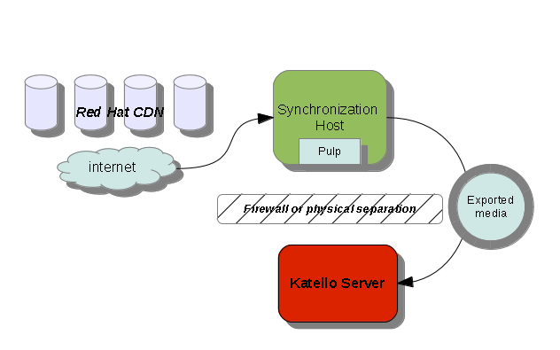

2.0: Disconnected
Katello Disconnected Utility
Intro
If you are working in an environment where you wish to synchronize content from Red Hat’s CDN and make available to your Katello servers that do not have a connection to the internet we have a utility that assists with this, known as katello-disconnected. A diagram of the content flow is as follows:

katello-disconnected is used via a command line interface with a summary outlined here:
katello-disconnected(1) Katello Reference katello-disconnected(1)
NAME
katello-disconnected - Tool for fetching content from CDN
SYNOPSIS
katello-disconnected [global_options] [subcommand [options]]
Possible commands are:
setup set pulp configuration (oauth is required)
import import a manifest
list list all or enabled repositories
enable enable particular repository or all repos
disable disable particular repository or all repos
configure create and configure repositories in pulp
sync start synchronizing all or particular repos
watch watch synchronization progress
export export all or particular repos
refresh redownload repository information from CDN
clean remove all repositories from pulp
DESCRIPTION
The katello-disconnected script communicates with pulp instance using REST and OAuth to synchronize repositories
exporting them into a directory structure that can be imported into Katello later on. It is able to import a manifest
file retrieving all provided products and repositories from the Red Hat CDN, creating those repositories in Pulp,
initiating synchronization, watching the progress of a sync, exporting the content into a directory and refreshing
already imported manifest.
Installation Steps
To start with katello-disconnected there are a series of steps you need to take to get it installed and configured. The installation should take place on your Synchronization Server seen above. This system is the one that has access to the internet and Red Hat’s CDN servers. These instructions point at the ‘‘katello nightly’’ builds but you can substitute this for the latest stable version of Katello if you desire.
1) Configure repositories on your Synchronization Server:
Enterprise Linux
For Enterprise Linux, we require the Katello repos, EPEL and the appropriate set of Software Collection repositories for Ruby 1.9.3.
For EL6:
$ rpm -Uvh http://fedorapeople.org/groups/katello/releases/yum/2.0/katello/RHEL/6/x86_64/katello-repos-latest.rpm
$ rpm -Uvh http://dl.fedoraproject.org/pub/epel/6/x86_64/epel-release-6-8.noarch.rpm
$ rpm -Uvh https://www.softwarecollections.org/en/scls/rhscl/ruby193/epel-6-x86_64/download/rhscl-ruby193-epel-6-x86_64.noarch.rpm
$ rpm -Uvh http://yum.theforeman.org/releases/1.6/el6/x86_64/foreman-release.rpm
$ yum-config-manager --enable rhel-6-server-optional-rpms
For EL7:
$ rpm -Uvh http://fedorapeople.org/groups/katello/releases/yum/2.0/katello/RHEL/7/x86_64/katello-repos-latest.rpm
$ rpm -Uvh http://download-i2.fedoraproject.org/pub/epel/7/x86_64/e/epel-release-7-2.noarch.rpm
$ rpm -Uvh https://www.softwarecollections.org/en/scls/rhscl/v8314/epel-7-x86_64/download/rhscl-v8314-epel-7-x86_64.noarch.rpm
$ rpm -Uvh https://www.softwarecollections.org/en/scls/rhscl/ruby193/epel-7-x86_64/download/rhscl-ruby193-epel-7-x86_64.noarch.rpm
$ rpm -Uvh http://yum.theforeman.org/releases/1.6/el7/x86_64/foreman-release.rpm
$ yum-config-manager --enable rhel-7-server-optional-rpms
Red Hat Enterprise Linux
Katello requires your RHEL to be registered to Red Hat channels/repos. We also require the RHEL optional RPMs repo is enabled:
$ yum-config-manager --enable rhel-6-server-optional-rpms
For RHEL 7:
$ yum-config-manager --enable rhel-7-server-optional-rpms
CentOS
For CentOS, add the following:
$ wget -O /etc/yum.repos.d/epel-rhsm.repo http://repos.fedorapeople.org/repos/candlepin/subscription-manager/epel-subscription-manager.repo
2) Install katello-utils and associated RPMs:
$ yum -y install python-qpid-qmf python-qpid qpid-cpp-server-store katello-utils
This will install roughly 200 packages depending on your pre-existing configuration.
3) Configure connection to pulp
You need to edit Pulp so it is allowed to authenticate with OAuth. Edit /etc/pulp/server.conf and look for the [oauth] section. Uncomment and add values for the settings below.
You will need a new secret value which is a 32 char alpha numeric string, you can generate a new one with:
$ tr -dc "[:alnum:]" < /dev/urandom | head -c 32
tuqVww9ZmSYR6ROftJNOgn1O8NDJ3jqL
Copy paste that into the oauth_secret field in the server.conf file:
[oauth]
enabled: true
oauth_key: katello
oauth_secret: tuqVww9ZmSYR6ROftJNOgn1O8NDJ3jqL
We also need to disable the qpidd authentication, open /etc/qpid/qpidd.conf:
# Configuration file for qpidd. Entries are of the form:
# name=value
#
# (Note: no spaces on either side of '=').
# Run "qpidd --help" or see "man qpidd" for more details.
auth=no
4) Configure katello-disconnected connection to Pulp:
$ katello-disconnected setup --oauth-key=katello --oauth-secret=tuqVww9ZmSYR6ROftJNOgn1O8NDJ3jqL
This places a configuration value in ~/.katello-disconnected
5) Configure Pulp on your Synchronization Server that is connected to the internet
service qpidd start
chkconfig qpidd on
service mongod start
sleep 10
chkconfig mongod on
sudo -u apache pulp-manage-db
service httpd restart
chkconfig pulp_workers on
service pulp_workers start
chkconfig pulp_celerybeat on
service pulp_celerybeat start
chkconfig pulp_resource_manager on
service pulp_resource_manager start
6) Import manifest
You need to have a Subscription Manifest for this step. You can read how to get one here: Generate Subscription Manifest
$ katello-disconnected import -m ./manifest.zip
This sets up the list of available repositories to synchronize based on your subscriptions selected.
Syncing Content
By default katello-disconnected will enable all repos included in the manifest for syncing. This is often far too much content to sync so first we disable
1) disable all repos
$ katello-disconnected disable --all
2) list available repos to sync:
$ katello-disconnected list --disabled
rhel-5-server-debug-rpms-5Server-i386
rhel-5-server-debug-rpms-5Server-ia64
rhel-5-server-debug-rpms-5Server-x86_64
rhel-5-server-debug-rpms-5_7-i386
rhel-5-server-debug-rpms-5_7-ia64
rhel-5-server-debug-rpms-5_7-x86_64
rhel-5-server-debug-rpms-5_8-i386
rhel-5-server-debug-rpms-5_8-ia64
rhel-5-server-debug-rpms-5_8-x86_64
rhel-5-server-debug-rpms-5_9-i386
rhel-5-server-debug-rpms-5_9-ia64
rhel-5-server-debug-rpms-5_9-x86_64
rhel-5-server-isos-5Server-i386
....
3) enable a few a repo to sync:
$ katello-disconnected enable -r rhel-6-server-sam-rpms-6_4-x86_64
4) push and create the repositories in Pulp to allow synchronization:
Any time you enable or disable a repository you need to remember to call the configure command
$ katello-disconnected configure
5) sync the repos
Now that Pulp is all setup to synchronize content you can call the sync and watch command:
$ katello-disconnected sync
$ katello-disconnected watch
Watching... (this may be safely interrupted with Ctrl+C)
State: running:
repo: [rhel-6-server-optional-rpms-6_5-x86_64] packages remaining: [unknown]
State: running:
repo: [rhel-6-server-optional-rpms-6_5-x86_64] packages remaining: [unknown]
State: running:
repo: [rhel-6-server-optional-rpms-6_5-x86_64] packages remaining: [unknown]
...
...
Watching finished
Once it is done you are able to now export the content.
Exporting Content
1) Export the synced repos
$ katello-disconnected export -t /var/tmp/export
Waiting for repos to finish publishing
Watching... (this may be safely interrupted with Ctrl+C)
State: waiting:
repo: [rhel-6-server-optional-rpms-6_5-x86_64] packages remaining: [unknown]
State: waiting:
repo: [rhel-6-server-optional-rpms-6_5-x86_64] packages remaining: [unknown]
State: waiting:
repo: [rhel-6-server-optional-rpms-6_5-x86_64] packages remaining: [unknown]
State: waiting:
repo: [rhel-6-server-optional-rpms-6_5-x86_64] packages remaining: [unknown]
State: finished:
repo: [rhel-6-server-optional-rpms-6_5-x86_64] packages remaining: [unknown]
Watching finished
Done watching ...
Archiving contents of /var/tmp/export into 4600M tar archives.
NOTE: This may take a while.
Done exporting content, please copy /var/tmp/export/* to your disconnected host
Now if you look in /var/tmp/export you will see:
$ ls /var/tmp/export/
content-export-00 content-export-01 content-export-02 expand_export.sh
These files can be burned to a series of DVDs based on the number sequence. They are then expanded and re-assembled using the ‘expand_export.sh’ script contained within.
Re-Importing into your disconnected Katello Server
Copy the contents of your export to a directory on your disconnected Katello Server as shown in the diagram above. Presently, if you think you will be doing multiple exports over time, copy these directly into /var/www/html
1) Run the ‘expand_export.sh’:
$ cd /var/www/html
$ ./expand_export.sh
*** Done expanding archives. ***
***WARNING***: Ensure that the directory and filesystem containing the exports has enough space to expand out the archives. This means if your export is 40G you will need an extra 40G of space to expand it on the same filesystem.
2) Restore the SELinux contexts on the moved files:
$ cd /var/www/html
$ restorecon -r *
At this point your local Disconnected Katello Server is now acting as its own CDN with the files now located on http://localhost/content. You don’t have to do this on your Katello server itself, it can be any host on the same disconnected network inside your environment. You just need to make it accessible via HTTP to your Katello Server.
2) Change CDN URL and import manifest into Katello Server
- Login to your Katello WebUI
- Navigate to: Content -> Subscriptions -> Red Hat Subscriptions
- Change the CDN URL to:
http://localhost - Import your manifest, same one used above on your disconnected host using the Upload mechanism
3) Enable repositories and sync repos
Now that your manifest is imported you can sync your repos in from your locally copied CDN.
- Navigate to Content -> Repositories -> Red Hat Repositories
- Enable the repositories here that you also enabled and synced from Syncing Content above
- Navigate to Content -> Sync Management. Select and synchronize the repos listed on the page
At this point you are done and able to create Content Views, promote your content, subscribe systems and use Katello as if it was connected. We recommend that you remove the exported content archive and export script from /var/www/html to avoid any issues that might arise with future imports.
$ cd /var/www/html
$ rm content-export-* expand_export.sh
Note: If you subsequently import content into a product for which you have previously created repos (i.e., you import an i386 tree for a product where you’ve previously imported the x86_64 content), it may not be readily available in the UI. To resolve this, force a refresh of the cdn data:
$ /etc/cron.daily/katello-refresh-cdn